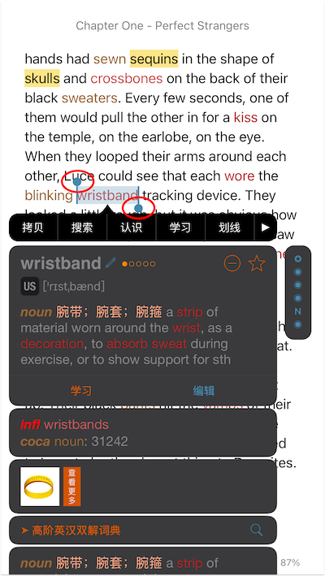

title: 手势说明
听阅将书籍分为三类：纯文本、文本类PDF、图片类PDF。纯文本包括epub、mobi、txt、rtf等书籍。PDF分为文本类PDF和图片类PDF。如果您利用Adobe或其他PDF阅读器打开PDF后可以选中并拷贝PDF中的文本内容即为文本类PDF，若不可以则为图片类PDF。
在阅读过程中，我们将尽量保证同一手势在不同类型书籍中的效果一致。但由于技术限制，对某类书籍，部分手势操作会有所限制。比如对于图片类PDF，不支持拖动选择书籍内容。
手势介绍
长按
若将选词方式设置为“长按”，长按任意单词可打开单词详情菜单查看解释。
*注意：图片类PDF的长按查词功能只在8.6.8及之后的听阅版本支持。
点按
若点按的是学习、笔记、划线内容，点按即可查看其详情。
若将选词方式设置为“点按（连续查词）”或“点按（不连续查词）”，点按任意单词即可打开单词详情菜单查看解释。若选词方式是“长按”，并且词汇栏位置未设置为“无”，点按书中高亮词汇可在词汇栏快速查看单词解释，点按未高亮词汇则会在词汇栏显示单词所在句子的中文翻译。
点按空白区域，可隐藏/显示页面上下工具栏。
双击
双击单词可快速选中单词所在句子，并查看句子中文翻译。
对于文本类PDF和图片类PDF，双击空白区域可放大/缩小页面。
对于纯文本书籍，双击书中图片可放大图片查看。
对于双语书籍，双击句子可查看真人翻译。
三击
对于点读版的有声书籍，三击单词将从该单词所在句子开始播放音频，三击空白位置可暂停/重启音频播放。通过此手势可快速从书中指定位置播放音频，也无需点按播放/暂停按钮快速启动/暂停音频播放。
对于非点读版有声书籍，三击页面可启动/暂停音频播放。
拖动
通过其他手势选择单词或句子后，可拖动两个实心圆点扩展选择区域，选择书中更多内容。
注意：拖动手势只支持纯文本和文本类PDF，不支持图片类PDF。

上拉
上拉页面退出阅读器，无需点击导航栏的返回按钮。
注意：如果您启用了“垂直滚动”，上拉退出功能失效。
下拉
下拉页面为当前页添加书签。
注意：如果您启用了“垂直滚动”，下拉添加书签功能失效。
从屏幕左边缘向右滑动
如果您将词汇栏位置设为“无”，可通过从屏幕左边缘向右滑动的方式打开词汇栏。